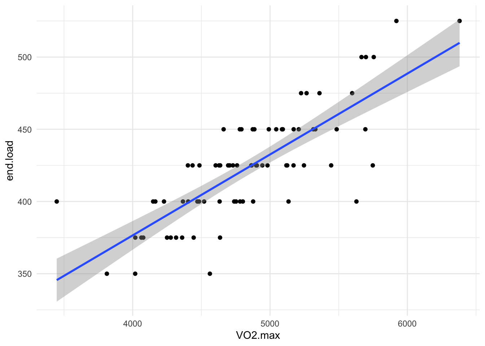

Call:
lm(formula = end.load ~ VO2.max, data = cycling)
Residuals:
Min 1Q Median 3Q Max
-67.786 -16.277 0.006 14.970 54.428
Coefficients:
Estimate Std. Error t value Pr(>|t|)
(Intercept) 1.525e+02 2.440e+01 6.249 2.38e-08 ***
VO2.max 5.601e-02 5.011e-03 11.178 < 2e-16 ***
---
Signif. codes: 0 '***' 0.001 '**' 0.01 '*' 0.05 '.' 0.1 ' ' 1
Residual standard error: 23.1 on 74 degrees of freedom
(4 observations deleted due to missingness)
Multiple R-squared: 0.628, Adjusted R-squared: 0.623
F-statistic: 124.9 on 1 and 74 DF, p-value: < 2.2e-16
Pearson's product-moment correlation
data: cycling$VO2.max and cycling$end.load
t = 11.178, df = 74, p-value < 2.2e-16
alternative hypothesis: true correlation is not equal to 0
95 percent confidence interval:
0.6903832 0.8636365
sample estimates:
cor
0.7924875 